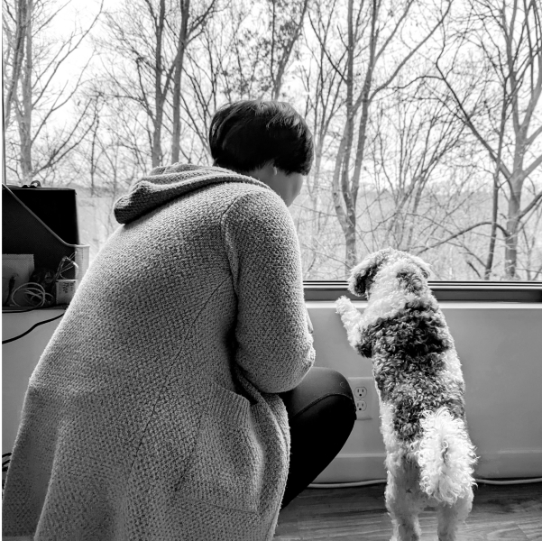

Single Player
Two video game creators go head-to-head in this delightful queer enemies-to-lovers workplace romance debut, perfect for fans of TJ Alexander and Helen Hoang.
Cat Li cares about two things: video games and swoony romances. The former has meant there's not been much of the latter in her (real) life, but when she lands her dream job writing the love storylines for Compass Hollow—the next big thing in games—she knows it’s all been worth it. Then she meets her boss: the infamous Andi Zhang, who's not only an arrogant hater of happily-ever-afters determined to keep Cat from doing her job, but also impossibly, annoyingly hot.
As Compass Hollow's narrative director, Andi couldn't care less about love—in-game or out. After getting doxxed by internet trolls three years ago, Andi’s been trying to prove to the gaming world that they’re a serious gamedev. Their plan includes writing the best game possible, with zero lovey-dovey stuff. That is, until the man funding the game's development insists Andi add romance in order to make the story “more appealing to female gamers.”
Forced to give Cat a chance, Andi begrudgingly realizes there's more to Cat than romantic idealism and, okay, a cute smile. But admitting that would mean giving up the single player life that has kept their heart safe for years. And when Cat uncovers a behind-the-scenes plot to destroy Andi's career, the two will have to put their differences aside and find a way to work together before it's game over.
Buy now
Local in Boston: Brookline Booksmith, Harvard Bookstore, Lovestruck Books, Trident Booksellers & Cafe
Online: Amazon, Barnes & Noble, Books-A-Million, Bookshop.org, Hudson Booksellers, Powell’s
Praise
“A must-read for fans of queer romance . . . Tai’s storytelling is both fun and thought-provoking, making this debut a standout in contemporary romance fiction.”
“[A] bighearted debut . . . Gamers will find plenty of enjoyable Easter eggs, and even those who’ve never picked up a controller will become invested in the ins and outs of game development. Meryl Wilsner fans should check this out."
“Single Player is the most fun read I’ve had in years. If you’ve ever restarted a game from your last save point to salvage your relationship with a romanceable hottie—and if you’ve ever wished you could do the same in real life—this book is tailor-made for you. Gaymers and queer nerds of every stripe will be rooting for Cat and Andi all the way to the final boss.”
“With the most delicious tension between the enemies-to-lovers main characters, Single Player will pull you deep into the gaming world and keep you turning pages even if you are not a gamer. A fantastic debut!”
“Full of razor-sharp wit, sincerity, and beautiful writing, Single Player is a must-read rivals-to-lovers romance. A perfectly smart nerdy rom-com.”
Events
About Tara

Tara Tai is an Asian American writer living in Boston, where they spend most of their time playing TTRPGs and romancing video game NPCs. They hold degrees from Harvard University and Harvard Business School. When they're not lost in imaginary worlds, they are annoying their wife Audrey and dog Gingko. Single Player is their debut novel.


Contact
To send Tara a direct message, please fill out this Google Form
Representation
Abby Saul of the Lark Group
abby@larkwords.com